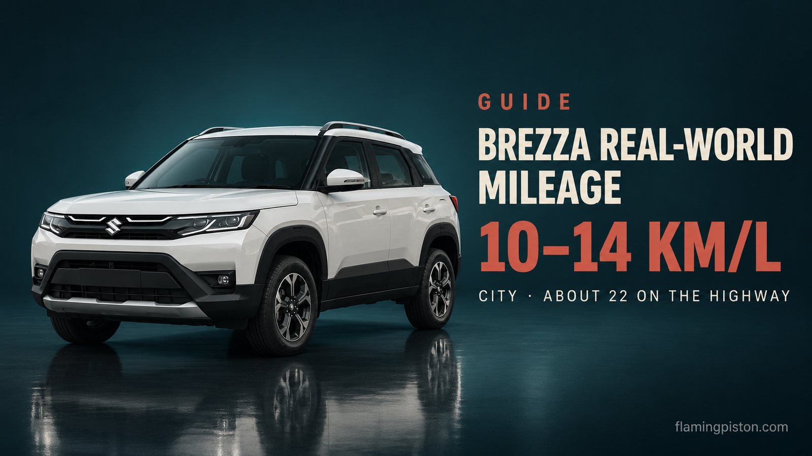

2026 Maruti Brezza Review: Price, Mileage & Verdict
By Gagan Mishra

Plan on 10–14 km/l in city traffic for the Brezza’s 1.5-litre petrol, not the 20-plus km/l ARAI claim. On a steady highway cruise, owners report figures much closer to the claim, around 22 km/l at 80–100 km/h. Below, we keep older 1.5-litre owner reports separate from the new turbo and add the CNG figures, so one driver’s result is never presented as an average.
Most of the owner-reported figures below come from the outgoing, pre-facelift Brezza (same core 1.5-litre petrol platform), sourced from Team-BHP ownership threads and forum discussions, not from our own long-term testing. Where a figure is specific to the new 2026 model, we say so directly. This is disclosed clearly throughout, in line with our Review Methodology.
Here's the number that matters more than any single kmpl figure: the gap itself, and how wide it actually gets in heavy traffic.
| Powertrain | ARAI Claimed | Real-World Range (Owner Reports) |
|---|---|---|
| 1.5 Petrol Manual | 20.81 – 21.09 km/l | ~15.5 – 18 km/l mixed, 8–12 km/l heavy city traffic |
| 1.5 Petrol Automatic | 20.17 km/l | ~13.5 – 17 km/l mixed, single digits in heavy traffic |
| 1.0 Turbo-Petrol | 19.96 – 20.47 km/l | One October owner: ~12 city / up to ~20 highway; not a tested average |
| CNG | 26.90 km/kg | ~21.5 km/kg reported average (previous-gen figure) |
The pattern across every petrol variant is the same: real-world city driving lands 30 to 50% below the ARAI number, while sustained highway cruising gets meaningfully closer to it. That's not a Brezza-specific flaw, ARAI's test cycle simply doesn't reflect Indian traffic, but the size of the gap is exactly what most "mileage guide" articles skip past.
This is where the ARAI number falls apart fastest. One long-term Team-BHP owner logged 8 to 11 kmpl in bumper-to-bumper Chennai traffic with the AC running, dropping into single digits during the worst midday heat, and climbing to 13 to 14 kmpl only on the rare traffic-free city run. That's not an outlier complaint, it shows up repeatedly across ownership threads: heavy stop-and-go traffic, constant first and second gear crawling, and AC load are the three factors that consistently drag city mileage well below the claimed figure.
If your driving is genuinely mostly city traffic, a realistic planning number is 10 to 14 kmpl for the naturally aspirated petrol, not the 20-plus on the spec sheet. That's a meaningful number to know before you calculate your monthly fuel budget.
Highway figures tell a much better story. One owner's 1200km road trip, including a twisty ghat section and sustained 120 to 140 km/h stretches, returned an overall 17.8 kmpl, genuinely impressive given the "spirited" driving style described. Another owner reported a more sedate steady 80 to 100 km/h cruise returning around 22 kmpl, close to the ARAI claim. The takeaway: on the highway, at a steady cruising speed, the Brezza's real-world mileage genuinely closes most of the gap to the claimed figure. It's city traffic, not the engine, that's the real variable.
On the 2026 facelift's official figures, the manual actually edges out the automatic: 20.81 to 21.09 km/l versus 20.17 km/l for the torque-converter automatic. That's a reversal worth knowing if you assumed automatics are always less efficient, and also worth knowing if you'd heard the opposite: on the outgoing pre-facelift Brezza, automatic variants carried mild-hybrid technology that the manual didn't, which occasionally let the automatic claim a higher official figure than the manual. Whether that mild-hybrid gap carries over to the 2026 lineup hasn't been confirmed in the sources we've reviewed, so treat the automatic-was-more-efficient claim as outgoing-model context, not a current-model fact.
In practical terms: if your driving is heavily city-based, the automatic's convenience in traffic likely matters more to your day-to-day experience than a roughly 0.5 to 1 km/l difference on paper.
The CNG variant's ARAI figure jumped meaningfully with the facelift, from 25.51 km/kg on the outgoing model to 26.90 km/kg now, while the underbody tank arrangement primarily changes luggage packaging. Real-world owner reports for the CNG platform (again, largely pre-facelift) cluster around 21.5 km/kg, a smaller proportional gap to claimed than the petrol variants show, which tracks with how CNG engines typically behave more consistently across driving conditions.
On running cost, that difference is real money. Using illustrative fuel prices of ₹76/kg CNG and ₹95/litre petrol, rather than a live local quote, a 900km monthly commute costs meaningfully less on CNG, the kind of gap that matters most to high-mileage daily drivers and fleet buyers, which is exactly the audience Maruti is targeting with the redesigned tank.
Four factors show up repeatedly across owner reports, in order of how much they actually matter:
On 12 October 2026, Team-BHP member asm_turbo reported roughly 12 km/l in city use and up to about 20 km/l on highway drives from a ZXi Turbo with approximately 1,200 km on its odometer. This is one owner’s experience, not a controlled test or a fleet average. See post 118 in the ownership thread.
What is the real-world mileage of the Maruti Brezza?
Based on owner-reported data for the platform (largely from the outgoing pre-facelift model, disclosed above), expect roughly 8 to 14 kmpl in heavy city traffic and 17 to 22 kmpl on the highway, against ARAI claims of 19.96 to 21.09 kmpl depending on variant.
Is the Brezza automatic more fuel efficient than the manual?
On the 2026 facelift, ARAI actually rates the manual slightly higher than the automatic. On the outgoing model, automatic occasionally beat manual due to mild-hybrid tech, a nuance not yet confirmed to carry over to 2026.
What is the real-world mileage of the Brezza turbo?
One October owner reported about 12 km/l in city driving and up to 20 km/l on highways. This is an anecdotal result from one car, not a guaranteed mileage range or a controlled comparison.
How much does AC use affect Brezza mileage?
Roughly 1.5 to 2.0 kmpl, most noticeable in hot-weather city driving.
For the full breakdown of price, variants, features, and safety, read our 2026 Maruti Brezza Review. Wondering how the automatic's mileage compares in practice? See our Brezza Automatic guide. Cross-shopping against the segment leader? See our Brezza vs Tata Nexon comparison.
More in the Brezza series: Full Review · Variants Explained · Automatic Review · CNG Review · Turbo vs 1.5 Petrol · Maintenance Cost · Boot Space · Safety & NCAP · Pros & Cons · vs Tata Nexon · vs Fronx · vs XUV 3XO CNG
Links checked 15 November 2026. Figures from other publications’ drives and from owner reports are attributed in the text.
By Gagan Mishra
By Gagan Mishra

By Gagan Mishra

By Gagan Mishra